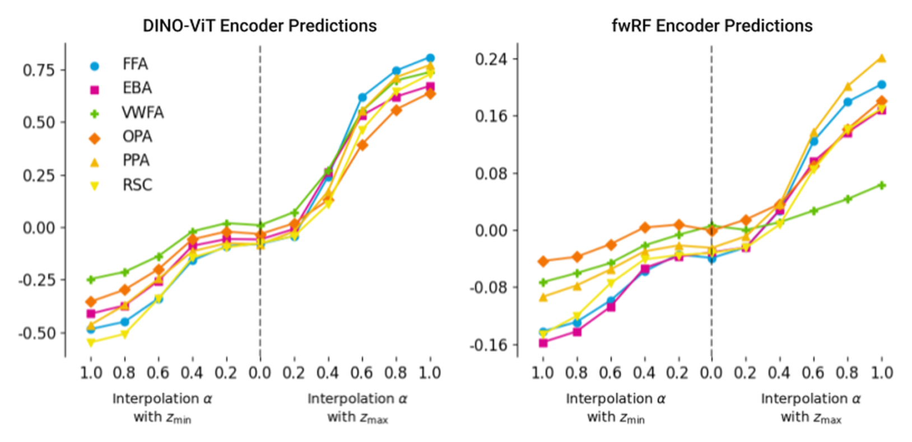
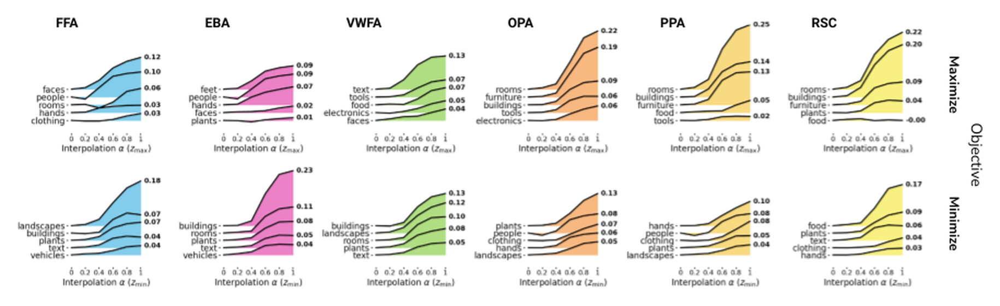
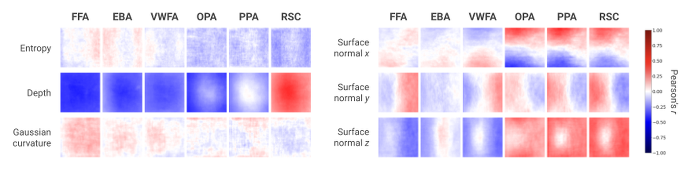
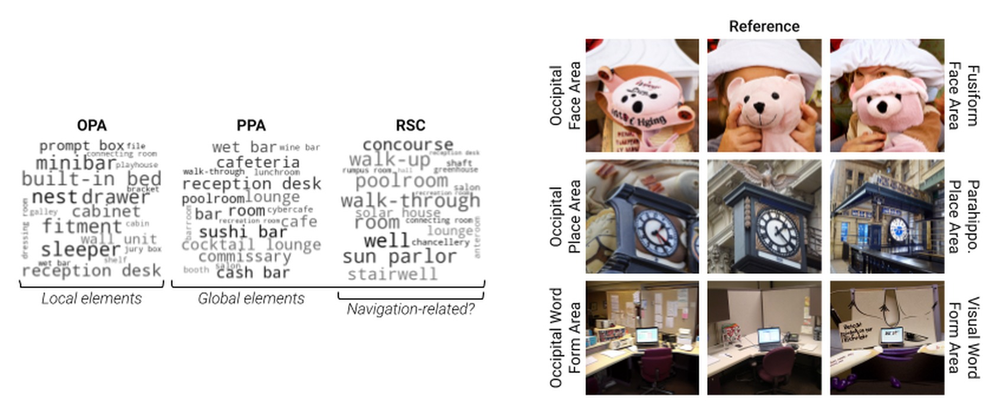

BrainACTIV
Identifying visuo-semantic properties driving cortical selectivity using diffusion-based image manipulation
Methodology
Results
Maximizing and minimizing region activity

We use two brain encoders that are not CLIP-based, a DINO-ViT encoder and an fwRF encoder, to predict how our manipulations affect each region. BrainACTIV successfully maximizes and minimizes predicted brain activations across higher visual cortex as the interpolation strength α increases.
Visuo-semantic properties of the manipulations

We identify the semantic categories whose presence increases when a region's activity is maximized (top) or minimized (bottom). We focus on 16 categories based on previous research on neural representations and behavioral judgments, create a CLIP embedding for each, and measure a category's presence in an image via its cosine similarity with the image embedding. The category selectivity suggested by BrainACTIV agrees with established neuroscientific findings.

We also study the correlation between brain activity and mid-level image features. Results suggest an important role of surface orientation in differentiating scene-selective (OPA, PPA, RSC) and object-selective regions (FFA, EBA, VWFA), while depth correlations emphasize differences between scene-selective regions. BrainACTIV facilitates the formulation of new fine-grained hypotheses about image properties driving brain activity.
Accentuating differences between regions

Anatomically distinct regions can be selective for the same category, such as the place-selective OPA, PPA and RSC. We identify differences between them through the WordNet nouns whose presence increases the most when we maximize each region's activity (left). BrainACTIV can also visually accentuate the preferred features that distinguish two regions (right): we create accentuation embeddings by subtracting the modulation embeddings of each region from one another.
Try it yourself
Manipulate your own images in our Google Colab notebook, which also shows the predicted activation of the target region and how the presence of object and scene categories changes. The code to reproduce our experiments is on GitHub.
BibTeX
@inproceedings{garciacerdas2025brainactiv,
title = {{BrainACTIV}: Identifying visuo-semantic properties driving cortical selectivity using diffusion-based image manipulation},
author = {Garcia Cerdas, Diego and Sartzetaki, Christina and Petersen, Magnus and Roig, Gemma and Mettes, Pascal and Groen, Iris},
booktitle = {Proceedings of the International Conference on Learning Representations},
year = {2025},
url = {https://openreview.net/forum?id=CGON8Btleu}
}